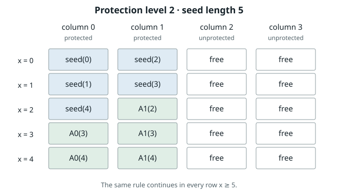

Let \((\mathbf a_n)_{n\in\mathbb N}\) be a nondecreasing sequence of Turing degrees. An exact pair for this sequence is a pair \(\mathbf b,\mathbf c\) satisfying
Thus each \(\mathbf a_n\) lies below both members of the pair, and every common lower bound is bounded by one term of the sequence. When the sequence is strictly increasing, this excludes a common lower bound lying above the whole sequence. In contrast, an ordinary minimal pair has precisely the zero degree below both members.
Use the fixed computable pairing bijection \(\langle i,x\rangle\) of natural numbers. For \(X\subseteq\mathbb N\), its column of index \(i\) is
The program \(P_i\) which forms \(\langle i,x\rangle\), queries \(X\), and returns that answer satisfies \(\varphi_{P_i}^{X}(x)=\chi_{X_i}(x)\), for every \(X,x\). Hence \(X_i\le_T X\). This projection program is computably uniform in \(i\): it merely hardcodes the integer \(i\) in front of the query.
If sets \(U,V\subseteq\mathbb N\) satisfy \(\chi_U(x)=\chi_V(x)\) for every \(x\ge m\), then \(U\equiv_T V\). In particular, if \(X_i\) agrees with \(U\) above \(m\), then \(U\le_T X\).
To compute \(\chi_U(x)\) from \(V\), test the computable inequality \(x<m\). In that case return the hardcoded bit from the finite table \((\chi_U(0),\ldots,\chi_U(m-1))\); otherwise query \(V\) at \(x\). This is an actual oracle program, with a finite table in its code. Exchanging \(U,V\) gives the reverse reduction. For the final assertion, substitute the column program \(P_i\) for the query, using oracle-program substitution.
Existence of such a program for each fixed finite error does not give an algorithm choosing its table from an arbitrary description of the sets. This distinction will matter for the columns of our construction.
Fix the actual family \(A:\mathbb N\to\mathcal P(\mathbb N)\). Define two presentations of its finite join of length \(s\):
Here \(\oplus\) is the existing even–odd binary join. The membership oracle of \(J_s\) answers every query. At \(q=\langle i,x\rangle\), it returns \(\chi_{A_i}(x)\) if \(i<s\), and zero otherwise. The zero answers outside these columns are part of the definition of a total set.
For every \(s\), \(J_s\equiv_T F_s\). For every set \(Z\),
If \(A_i\le_T A_{i+1}\) for all \(i\), then \(F_s\le_T A_{s-1}\) for \(s>0\), while \(F_0\le_T A_0\). Consequently \(J_s\le_T A_{\max(s-1,0)}\) for every \(s\).
The universal property of \(F_s\) follows by induction from the binary join universal property. At \(s=0\), the right side is vacuous and the empty set has a program returning zero. At a successor, reducing \(F_s\oplus A_s\) to \(Z\) is equivalent to reducing both constituents to \(Z\).
For the other presentation, \(J_0=\varnothing\). From \(J_s\oplus A_s\), compute membership in \(J_{s+1}\) at \(\langle i,x\rangle\) by querying the left constituent at \(\langle i,x\rangle\) if \(i<s\), the right at \(x\) if \(i=s\), and returning zero if \(i>s\). Conversely, \(A_s\) is column \(s\) of \(J_{s+1}\); to compute \(J_s\), query \(J_{s+1}\) only when \(i<s\), and otherwise return zero. These fixed finite tests and query programs show \(J_{s+1}\equiv_T J_s\oplus A_s\). Induction and substitution prove \(J_s\equiv_T F_s\).
Transitivity along the input chain gives \(A_i\le_T A_{s-1}\) for all \(i<s\) when \(s>0\). Apply the universal property. The empty join is computable and hence reduces to \(A_0\); no negative index is needed.
Use the finite binary words and their prefix relation \(\preceq\). Say that \(v\) is a protected extension of the seed \(u\) at level \(s\), written \(u\preceq_s v\), if \(u\preceq v\) and
A set \(X\) is a protected completion of \((s,u)\) if it extends \(u\) and satisfies the same equation for every \(q\ge|u|\) in a column \(i<s\). The seed may contain finitely many exceptions to the prescribed columns. The protection starts beyond that seed, separately for each side of the construction.
If \(u\preceq_s v\), \(v\preceq_t w\), and \(s\le t\), then \(u\preceq_s w\): positions below \(|v|\) use the first relation, and later positions use the second. Likewise any protected completion of \((t,v)\) is one of \((s,u)\).

For every seed \(u\), level \(s\), and bound \(m\), there is a specified word \(\operatorname{pad}_s(u,m)\) of length \(\max(|u|,m)\) with \(u\preceq_s\operatorname{pad}_s(u,m)\).
Retain all old bits. For each fresh position \(q=\langle i,x\rangle\), write \(\chi_{A_i}(x)\) when \(i<s\), and write zero otherwise. This finite rule specifies the word uniquely. It makes no assertion that the word is computable from \(s,u,m\) without access to the input sets. It also supplies a protected completion by using the same rule at every remaining position.
If \(u\preceq_s v\), padding \(v\) at level \(s\) is still a protected extension of \(u\). Existing finite computation certificates persist under this padding.
Write \(D(v,e,x)\) for the bounded finite certificate value: value \(y+1\) certifies output \(y\), while zero certifies nothing. For fixed \(s,e,f,u,v\), a protected disagreement witness is a triple \((x,\rho,\eta)\) such that
Denote the existence of such a triple by \(W(s,e,f,u,v)\). Every pair of protected completions extending the two witness words has unequal outputs at the witness input. This follows directly from certificate soundness. Deciding whether a witness exists is not claimed computable.
Fix \(s,e,u\). Define the particular partial oracle program \(S_{s,e,u}^{J_s}\) as follows. On input \(x\), enumerate numerical codes of binary words \(\rho\), using the established exhaustive enumeration. Search for the first code satisfying
Here \(\pi_1(q)\) is the column coordinate of the inverse pairing. Return \(D(\rho,e,x)-1\). The prefix test, certificate test and bounded range are effective; each required bit comparison uses one ordinary membership query to the total set \(J_s\). Thus bounded iteration and unbounded search give an actual program in the oracle language. Its code is fixed from the finite parameters \(s,e,u\), before any common output is chosen.
The displayed condition is exactly \(u\preceq_s\rho\), not merely \(u\preceq\rho\). Queries outside the protected columns are unnecessary. In particular this algorithm does not run a partial oracle with undefined answers replaced by zero: all oracle answers come from the total set \(J_s\), and only prescribed positions are tested.
Suppose \(\neg W(s,e,f,u,v)\), \(X,Y\) are protected completions of \((s,u),(s,v)\), and \(\varphi_e^X=g=\varphi_f^Y\) is a total numerical function. Then the specified program \(S_{s,e,u}^{J_s}\) halts on every input and returns \(g\). Consequently \(g\) is computable relative to \(J_s\), and hence to \(F_s\).
Fix \(x\). Prefix adequacy supplies a word \(\rho\succeq u\), realized by \(X\), with \(D(\rho,e,x)=g(x)+1\). Because \(X\) is a protected completion, this word satisfies \(u\preceq_s\rho\). Its code is a successful search candidate. The search therefore terminates.
Let \(\widehat\rho\) be the returned word and let its output be \(y\). Obtain from \(Y\) a word \(\eta\succeq_s v\) with \(D(\eta,f,x)=g(x)+1\). If \(y\ne g(x)\), then \((x,\widehat\rho,\eta)\) is a protected disagreement witness, a contradiction. Thus the returned value equals \(g(x)\). We compare with a certificate from the other oracle because the searched word need not be a prefix of \(X\). Finally substitute a reduction \(J_s\le_T F_s\) into the specified search program.
Define \(E_s^{e,f}(u,v)\). If \(W(s,e,f,u,v)\), select the witness with least code \(\langle x,\langle\rho,\eta\rangle\rangle\), and retain its two words. Otherwise retain \(u,v\). Pad each retained word at level \(s\) to length at least \(s+1\), using \(\operatorname{pad}_s\).
Writing the resulting pair as \((u',v')\), we have \(u\preceq_s u'\), \(v\preceq_s v'\), and \(|u'|,|v'|\ge s+1\). For every protected completion \(X,Y\) of \((s,u'),(s,v')\), respectively,
A chosen disagreement survives padding and every later completion, so in that case the antecedent is impossible. In the other case the new completions are protected completions of the old seeds, and applies. The assertion concerns protected completions; it does not assert the conclusion for arbitrary completions of the finite seeds.
Start with \(u_0=v_0=[]\). At stage \(s=\langle e,f\rangle\), put
These are the actual constructed words and sets for the given family \(A\). Each successor preserves the old prefix and has length at least \(s+1\). The coherent-union lemma therefore supplies total characteristic sequences extending every stage word. Concretely \(\chi_B(q)=u_{q+1}(q)\), and similarly for \(C\).
For every \(s\), the final sets \(B,C\) are protected completions of \((s,u_s),(s,v_s)\). In particular, for \(t\ge s\), \(u_s\preceq_s u_t\) and \(v_s\preceq_s v_t\).
Induct on \(t\ge s\). At a successor stage the extension protects all columns of index less than \(t\), hence every column of index less than \(s\). The composition rule for protected extensions proves the finite assertion. Fix a position \(q\ge|u_s|\) in a protected column. Choose \(t\ge s\) with \(t>q\). The length bound puts \(q\) inside \(u_t\), whose bit equals the prescribed bit; the final union retains that bit. The right side has the identical argument.
Thus an earlier exceptional bit in a seed is preserved, and every previously protected tail remains protected. Raising the protection level never requires changing an old bit.
For every \(n\), columns \(B_n,C_n\) agree with \(A_n\) except at finitely many positions. More explicitly,
Consequently \(A_n\le_T B\) and \(A_n\le_T C\).
The set \(B\) is a protected completion at stage \(n+1\), so column \(n\) agrees with \(A_n\) at each paired position \(\langle n,x\rangle\ge|u_{n+1}|\). The fixed pairing satisfies \(\langle n,x\rangle\ge x\), giving the displayed cutoff. Use the separate cutoff \(|v_{n+1}|\) on the other side. Apply followed by the actual column projection.
These are pointwise reductions: for each \(n\) there is a finite correction table and a reduction program. We have not proved a computable function that produces these tables or reduction indices from \(n\). The stage words themselves need not be computable in \(n\).
If \(\varphi_e^B=g=\varphi_f^C\) is total, then \(g\) is computable relative to \(J_{\langle e,f\rangle}\). In particular, if \(D\le_T B\) and \(D\le_T C\) with witnessing indices \(e,f\), then
Consider exactly stage \(s=\langle e,f\rangle\). The final unions are protected completions of the words produced at that stage. The conclusion of applies to these actual sets and these actual program indices. A disagreement choice would contradict their common total output; in the other case the fixed protected-prefix search computes it. For the set version use \(g=\chi_D\), obtaining an actual reduction to \(J_s\), and substitute the reduction \(J_s\le_T F_s\).
Let \(A_n\le_T A_{n+1}\) for every \(n\). For the actual constructed sets \(B,C\) above and every set \(D\),
For the forward implication choose the supplied reduction indices \(e,f\). By and , \(D\le_T F_s\le_T A_{\max(s-1,0)}\), where \(s=\langle e,f\rangle\). This includes \(s=0\), when the finite join is empty. For the reverse implication, compose \(D\le_T A_n\) with the two reductions in .
For a nondecreasing sequence of degrees, choose representatives \(A_n\). The native degree order makes the input inequalities precisely \(A_n\le_T A_{n+1}\). Passing to the degrees of these same \(B,C\) proves the exact-pair definition. Every degree has a representative, so the set formulation covers all degree lower bounds.
If \(\mathbf a_n<\mathbf a_{n+1}\) for all \(n\), any exact pair \(\mathbf b,\mathbf c\) for this sequence has no greatest common lower bound. Such an incomparable pair exists in the Turing degrees.
Suppose \(\mathbf d\) were a greatest common lower bound. Exactness gives \(\mathbf d\le\mathbf a_n\) for some \(n\). But \(\mathbf a_{n+1}\) is a common lower bound, so greatestness gives \(\mathbf a_{n+1}\le\mathbf d\le\mathbf a_n\), contradicting strict increase.
For a concrete input use the finite jump iterates \(\mathbf0,\mathbf0',\mathbf0'',\ldots\). Their strict increase and produce the required pair. If two degrees were comparable, their smaller member would be their greatest common lower bound. Thus this pair is incomparable. The Turing degrees have binary joins, but some pairs have no meet in the existing degree order.
Apply the construction to \(\mathbf a_n=\mathbf a\) for all \(n\). Must the resulting pair fail to have a meet? If \(\mathbf a=\mathbf0\), must it be an ordinary minimal pair?
Its common lower bounds are exactly the degrees below \(\mathbf a\), so \(\mathbf a\) is its meet. Strict increase is essential to the no-meet conclusion, although it is unnecessary for the construction. For the zero chain the common lower bounds are exactly zero, but positivity of both constructed degrees has not been required or proved. The definition of an ordinary minimal pair includes positivity. The preceding separate diagonal requirements supply that extra condition in the minimal-pair construction.
Are the projection programs, the correction programs, and the stage map all computable uniformly in their displayed indices? Does the argument give c.e. representatives for the exact pair?
The column projection code is uniform in its column index. The protected-prefix search has one code effectively determined by its finite parameters \(s,e,u\); correctness is proved relative to the specified total oracle \(J_s\). But the finite stage seeds and their correction tables are not supplied computably in the stage index. The stage choice decides whether a compatible disagreement exists, using the input sets in its compatibility condition. No algorithm computing all stages, no c.e. enumeration of the constructed sets, and no jump bound for them is proved. In particular this exact-pair theorem does not imply a c.e. minimal-pair theorem.